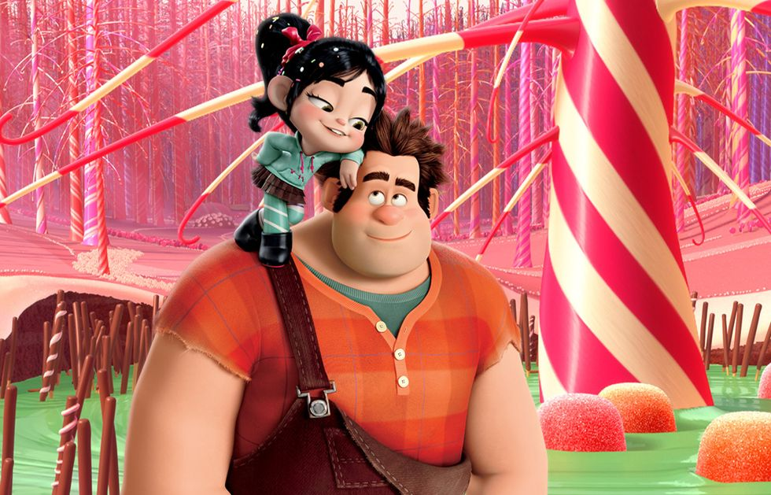

Los clásicos de Disney tienen un peso importante en la historia del cine, desde su primer lanzamiento "Blanca nieves y los siete enanitos" en 1937 Disney nos ha dejado títulos inolvidables que han marcado la vida de millones de personas alrededor del mundo.
La película de Disney destaca por su excelente música y guion, que equilibra aventura, dolor, diversión y terror. Los personajes, incluido el villano Scar, son memorables y contribuyen a una experiencia impactante y emocionante.

Rapunzel es una princesa secuestrada y encerrada en una torre desde su nacimiento. Al crecer, se convierte en una valiente adolescente con una larga cabellera. Decide escapar y su vida cambia al conocer a Flynn Rider, un bandido buscado que se refugia en su torre. Juntos, forman un pacto y emprenden una emocionante aventura. En su camino, se encuentran con un caballo astuto, un camaleón protector, una pandilla de matones y la peligrosa madrastra de Rapunzel. Esta entrañable película de animación está basada en el cuento de los Hermanos Grimm y cuenta con música de Alan Menken.

Hay muchos villanos memorables en los clásicos animados de la compañía, pero siempre me quedaré con la temible Cruella de Vil, en parte porque tiene una mayor conexión con la realidad que un origen de cuento más típico. Por supuesto la película funciona bastante bien con todo lo que tiene que ver con Pongo, Perdita y sus dueños hasta que sale, pero luego gracias a ella pasa a otro nivel.

Un derroche de imaginación a la cual la audiencia le ha cogio cariño, una secuencia de grandes ideas que quizás encajan de maneras mejorables, pero que mantienen al espectador enganchado en el apartado visual, aunque también ayuda mucho la increíble interpretación de los personajes secundarios.

Mulan es una joven que se une al ejército imperial para proteger su pueblo y la Dinastía Wei de la invasión de los Hunos. A diferencia de sus amigas, se entrena para ser parte de la defensa del Estado. Para enlistarse, finge ser un hombre, cumpliendo así su sueño sin oposición. Una vez en el ejército, se esfuerza por ganarse la confianza de sus compañeros. La película de animación, dirigida por Tony Bancroft y Barry Cook, cuenta con un guion de varios escritores y un elenco de voces que incluye a Ming-Na Wen como Mulan y Lea Salonga en las canciones.